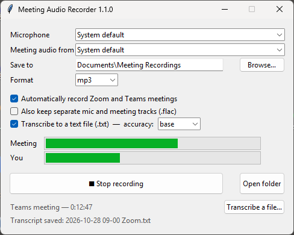

Meeting Audio Recorder
Record audio only from your Zoom and Microsoft Teams meetings on Windows: the other people's voices and your own microphone, saved as one MP3 per meeting, plus a text transcript. It's free and open source.

What it does
Records meetings automatically
Starts when a Zoom or Teams meeting begins and saves when it ends.
Captures both sides
Records what you hear through your speakers or headset, plus your USB mic, mixed into one file.
Writes a transcript
Saves a .txt file for each meeting, with each line marked You or Others. Whisper makes it on your PC.
Stays on your PC
It doesn't use bots, plugins, accounts or the cloud. Files are saved to Documents\Meeting Recordings.
Small files
About 1 MB per minute as MP3. WAV and FLAC are also available, plus optional separate tracks.
Get started
- Download
MeetingAudioRecorder.exeand run it. If Windows SmartScreen warns you, choose More info → Run anyway. - Pick your microphone and the speakers or headset you hear meetings through.
- Leave Automatically record Zoom and Teams meetings ticked and keep the window open.
- Join a meeting. When you leave, the recording is saved, and a few minutes later the transcript appears next to it.
How it works
The app uses Windows' built-in WASAPI loopback to capture the audio going to your speakers, and records your microphone at the same time. To spot meetings, it checks the microphone-usage information Windows already keeps (the same information behind the mic icon in the taskbar). Zoom and Teams hold the mic open for the whole meeting, even while you're muted.
Transcripts are made with faster-whisper, which runs entirely offline after a one-time model download. Your mic and the meeting audio are transcribed separately, which is how each line gets its You or Others label.
Please get consent
Recording laws vary, and many places require everyone on the call to agree. Tell participants you're recording, and follow your organization's policies.